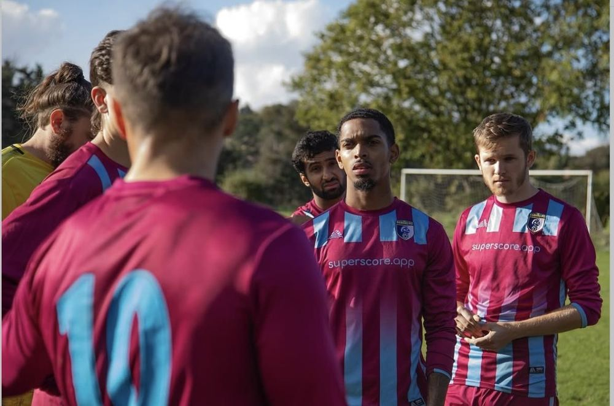
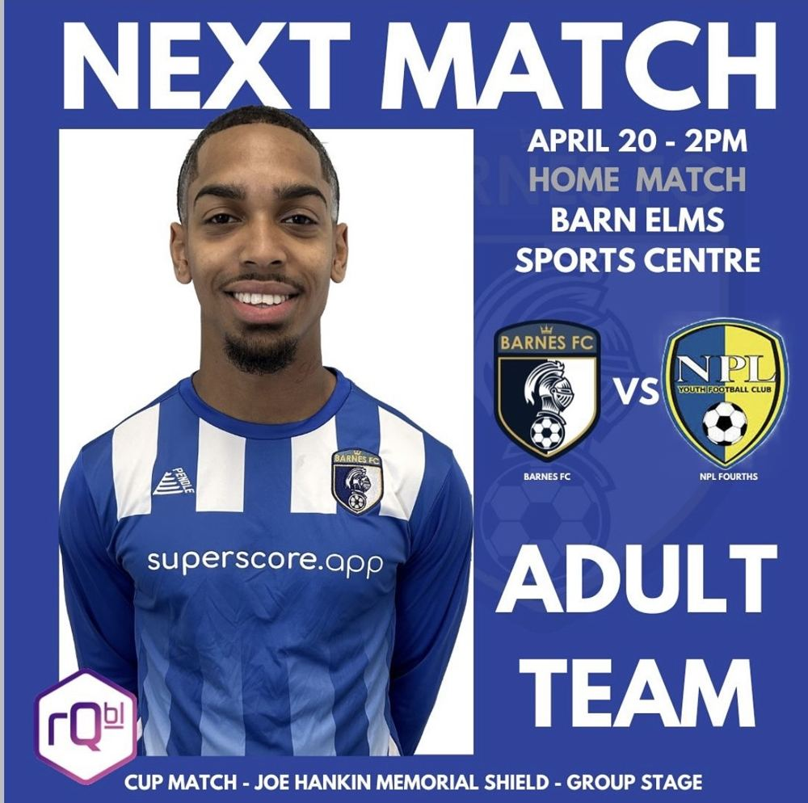
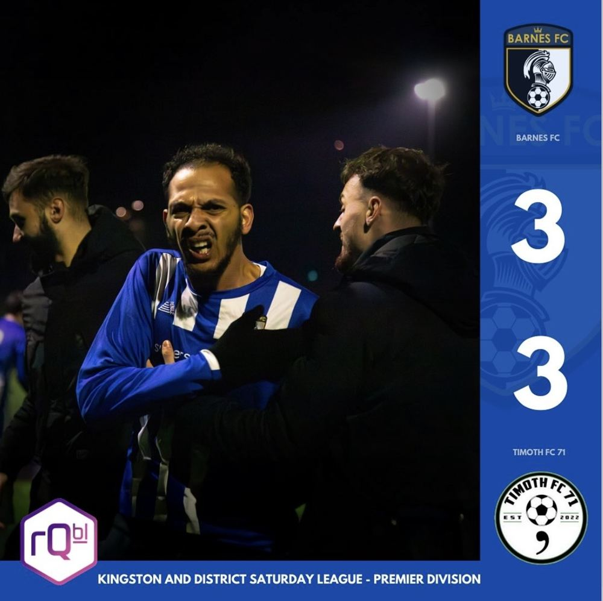
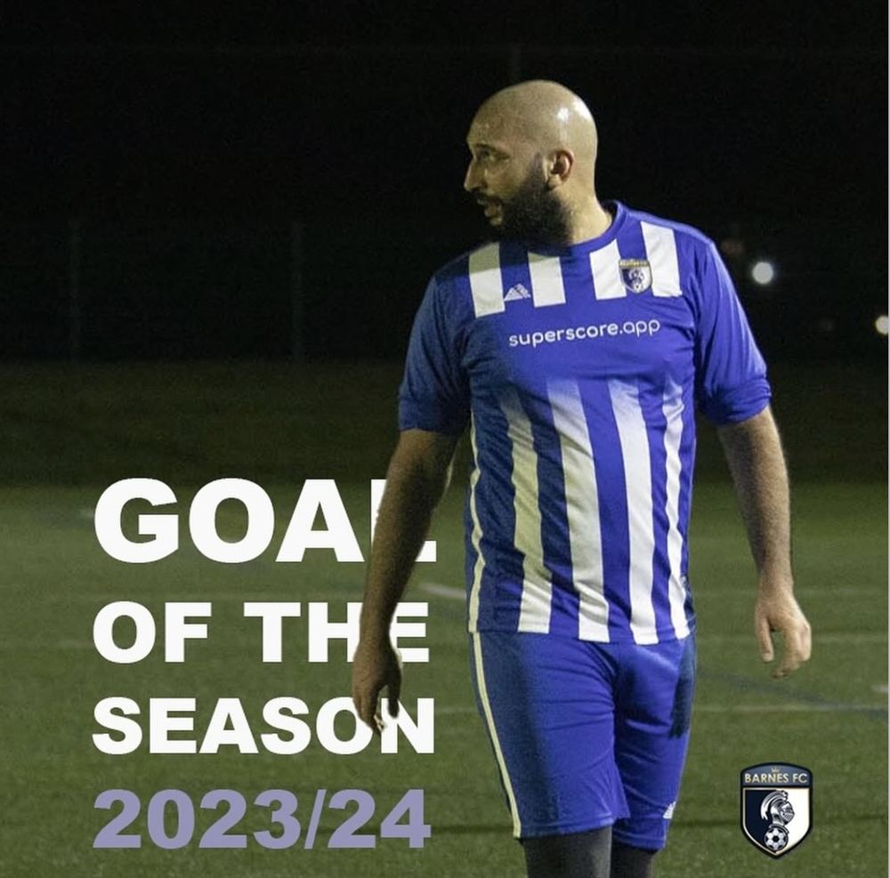

#1
Video: the manager’s review of the Ashtead FC match
1 Oct 2023
154 likes6 comments
From August 2023 to August 2024 I ran Barnes FC’s Instagram end to end. I shot the matchday photos, designed the graphics, wrote the posts and published them. Followers grew from about 500 to about 1,300.
Barnes FC was founded in 1862 and is a founding member of The Football Association. Before I took over, the account posted irregularly. It published 13 posts in its first ten months, and around 11 a month in the year before I joined. Only 1 in 20 posts reached 50 likes.
I owned every step, from the touchline to the published post.
I photographed first-team and reserves fixtures, giving the club original action and squad imagery every week.
I created the club’s visual identity online: matchday, result, fixture, kit-launch and partner graphics.
I planned, wrote and published posts, kept a steady matchday rhythm and tracked what performed.
I also published news and match updates on the club’s website, keeping it in step with social media.
Every photo and every graphic on this page is my own work. None of it came with a budget.
Neither I nor the club owned a camera. I arranged to borrow one, and had never used that camera before my first match.
During games I shot photos on the camera and filmed video on my phone at the same time, so every match produced both.
This was my first experience with Photoshop and Canva. I taught myself both and built the club’s matchday graphics from scratch.
Shot by me on matchdays. Click any image to enlarge.



Designed by me in Photoshop and Canva, using my own match photos.




Compared with the 12 months before I took over (Aug 2022 – Jul 2023).
Average likes per post by month, Aug 2022 – Aug 2024. Dashed lines show each period’s average.
I posted more of what fans engaged with, and made every post better. Average interactions (likes + comments) per post, compared with the year before.
Beyond regular posting, I ran campaigns to grow the audience and raise money for the club.
I ran the social campaign behind a donation drive to create a women’s team at Barnes FC. The goal was 50 donors.
I created a giveaway where followers could win a club-history shirt, to bring new people to the account.
My best posts drew 3–6x the average engagement of the year before.
Every result here is organic. No post was boosted and no ads were run. The growth came from original photography, consistent design and posting what the club’s community wanted to see.
I bring together data analysis and content. Happy to chat about data, marketing operations or social media roles.